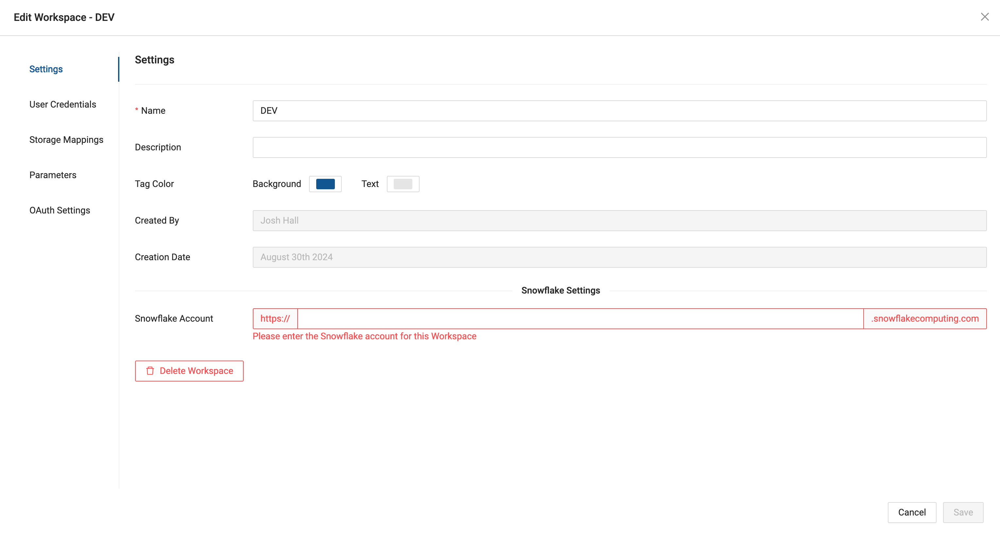
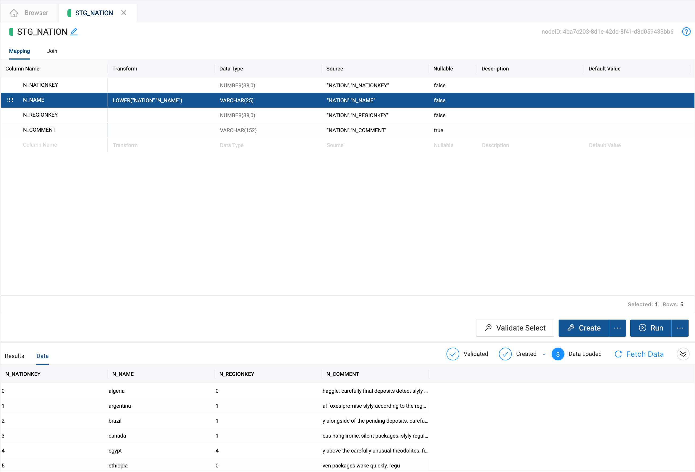
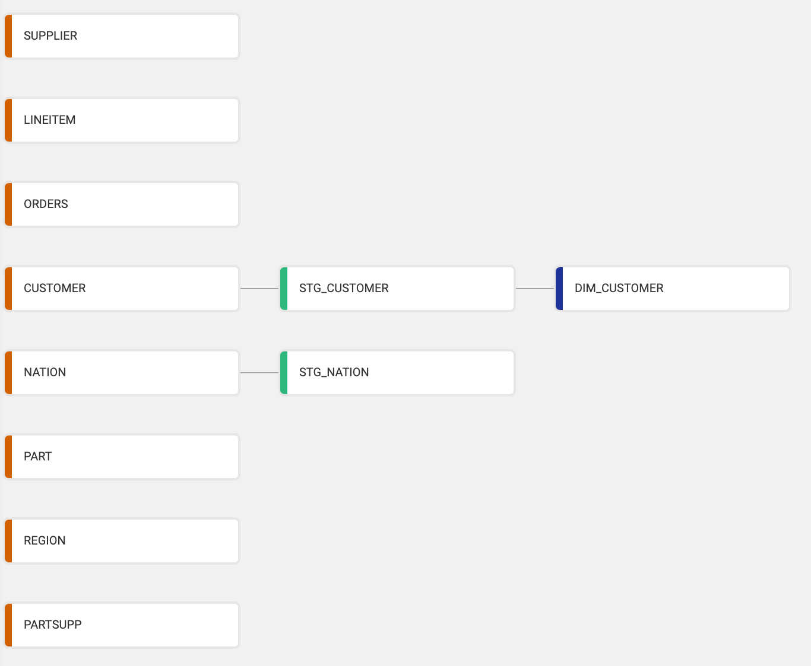

Coalesce is a best-in-class Data Transformation solution for Snowflake. With Coalesce, you build directed acyclic graphs (DAG) made up of nodes that run on a schedule and produce tested, up-to-date datasets ready for your business users.
The Coalesce product is built around the concept of "metadata" - column and table level information that describes the structure and transformations inside your data warehouse. This metadata makes both designing and deploying data warehouses easier, especially at enterprise scale.

This guide will help you quickly get started with Coalesce, connecting your database and creating a small data mart for a hypothetical sales team. Using the Snowflake sample database, we will be implementing a Dimension node to track historical changes of their customers and a Fact node to record order transactions.
The following video provides a brief overview of (most of) what this guide will be covering.
Prerequisites
- Familiarity with SQL and Snowflake
- Basic understanding of dimensional modeling
What You'll Learn
- How to use Coalesce to build a basic data transformation pipeline
What You'll Need
- If you haven't yet signed up for a Coalesce account, you can do so here.
- Make sure you're using Google's Chrome browser, as other browsers are not officially supported.
- Have your Snowflake login information handy. Don't have a Snowflake account yet or not ready to connect your company's Snowflake to Coalesce? Sign up for a free trial here and use Snowflake's provided sample data.
What You'll Build
- A small data mart containing dimension and fact tables using native Snowflake SQL
Interface Overview
When you first sign in on a new account, you'll be presented with the Projects Dashboard, where a default Project and Development Workspace will be already created. Feel free to disregard the warning about Version Control, as this guide will not be using that feature. Click the Launch button to open the workspace to continue.

Once you've done this you'll be presented with the Build interface. This is where you'll spend most of your time creating nodes, building a graph with them, and transforming your data. In Coalesce, each Node is a logical unit of work that represents a table, a view, or multiple Snowflake objects. The other interface is the Deploy interface, which will be used to push your pipeline to other environments (QA, Production, etc.), including your graph and other metadata.

Connect to Snowflake
- Click on Build Settings, which is represented by a cogwheel icon toward the bottom left

- Go to Development Workspaces and edit your current Workspace by clicking the pencil icon to the right of it.
- Obtain your Snowflake URL, which you can find in the lower left of Snowflake's UI upon login -

- From the Edit Workspace screen → Settings → Account → Add your Snowflake URL

- From the Edit Workspace screen → User Credentials and fill out the form with your Snowflake login
- Click Test Connection to ensure your credentials work as expected
- Click Save
You've now connected Coalesce to your Snowflake instance!
Configure Storage Locations & Workspace
A storage location is a logical name you provide to represent a database and schema (in Snowflake) and you will need them to make use of the Workspace you configured earlier. Depending on when you signed up for Coalesce, your account may have one or two Storage Locations already created. One will be mapped to the Snowflake Sample Data (SRC or SAMPLE) and the other will be where we write new tables (WORK or TARGET). If your workspace already has 2 storage locations, you can skip to Step 3 below.
- Go to Build Settings → Storage Locations and click on New Storage Location to create a new location - TARGET
- Make sure to set TARGET as the default Storage Location.
- Edit your Workspace → Storage Mappings
- From here enter the actual databases and schemas that will correspond to each Storage Location. For this guide we will be using Snowflake's sample schema TPCH_SF1 as our data source. Feel free to use any schema you'd like as the target for the transformed data.

Now it's time to add Sources to the graph. The graph node view is where you'll configure Nodes that will transform your data. Below is an example of a graph with several nodes -

To add Source Nodes take the following steps:
- Expand Nodes from the Left Sidebar (if not already open)

- Click on the + sign → Add Sources

- Choose your source tables on the left and click Add Sources on the bottom right to add the sources to your pipeline

- You'll now see your graph populated with some Source Nodes

Now that you have a few Source Nodes on your graph, it's time to add a Stage Node. Stage Nodes are intermediate nodes in the graph where you prepare the data by applying business logic.
- Add one or more Stage Nodes by right clicking your
NationSource Node → Add Node → Stage Node. Note that you can select multiple Source Nodes by Shift+clicking them and then add multiple Stage Nodes simultaneously. - Double click on the Stage Node or right-click → Edit to open up the Node Editor
- Open Node Properties on the right and change the Location to the Target you configured earlier.

- Click Create to create a table in Snowflake
- Click Run to populate the table. Note that you haven't transformed the data yet!
- Edit the Transform field in the Mapping grid by double clicking in the transform field of the
N_NAMEcolumn. Try a simple transform likeLOWER()and the name of your column, or you can use the syntaxLOWER({{SRC}}) - Click Run again to transform the data

- You'll see a preview of your transformed data in the lower half of the screen, but feel free to take a peek in your Snowflake database to confirm.
Congratulations! You've connected your database and applied a basic transformation to your data.
Now let's create a simple slowly changing dimension (Type 2) — an industry standard for tracking historical data by creating multiple records for a given natural key.
- Create a new Stage Node from the CUSTOMER Source Node
- Go into this new node to Create and Run
- Return to the main graph and create a Dimension node from the
STG_CUSTOMERnode. By default, Coalesce creates a Type 1 Dimension. In this guide we will be making a Type 2 Dimension to track historical data of a column.

- Go into the new
DIM_CUSTOMERnode - Open up Options on the right side
- Choose
C_CUSTKEYas a business key by selecting it and clicking the arrow to move it to the right

- Scroll down the options pane to Change Tracking and select columns
C_ADDRESSandC_PHONE, clicking the arrow to move them to the right - Now Create and Run the
DIM_CUSTOMERnode
You have now finished creating a Type 2 Dimension table. Next we will make a Fact Table.
Now let's create a fact table.
- Create a new Stage Node from the
ORDERSSource Node - Open the new
STG_ORDERSnode and delete all the columns except forO_ORDERKEY,O_CUSTKEY, andO_TOTALPRICE - Select the
DIM_CUSTOMERnode on the left side, then selectDIM_CUSTOMER_KEYand drag it into yourSTG_ORDERSmapping grid

- Go to Join in
STG_ORDERS - Delete the existing text
- Click Generate Join and then Copy to Editor
- Replace the
/*COLUMN*/text withO_CUSTKEY - Create and Run the
STG_ORDERSnode - Create a Fact Node from
STG_ORDERS - Open the new
FCT_ORDERSnode - Open Options → Business Key → add
O_ORDERKEY - Create and Run the
FCT_ORDERSnode
You have now made a fact table! You can run this query in Snowflake (adjusting your schema and databases from MY_DB and MY_SCHEMA to the ones in your environment) to confirm.
select DIM.C_NAME CUSTOMER_NAME,
sum(FCT.O_TOTALPRICE) TOTAL_PRICE
from "MY_DB"."MY_SCHEMA"."FCT_ORDERS" FCT
inner join "MY_DB"."MY_SCHEMA"."DIM_CUSTOMER" DIM
on FCT.DIM_CUSTOMER_KEY = DIM.DIM_CUSTOMER_KEY
group by DIM.C_NAME;
Now that you're familiar with some of Coalesce's basic functionality and how it can be used to automate many of your SQL workflows, you can:
- Contact us to speak with our product experts about your use case and see a live, personalized demo
- Check out our resources to learn more about our platform
- Learn more about version control and using git with Coalesce by visiting our documentation and following this hands-on guide
What we've covered
- Connecting Snowflake to Coalesce
- Adding data sources
- Transforming data with a Stage Node
- Creating Dimension and Fact Tables